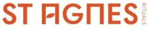

Trade Mark Journal No.2026/011 13 March 2026
WO0000001894846 (3,5,9,30,35)
Office of origin: Australia
Date of International Registration:12 November 2025
Date of designation in the UK:
12 November 2025

It is a condition of registration that the word "RITUALS" will be depicted in the same colour as the words "ST AGNES"
International priority date claimed: 11 November 2025
(Australia)
(2602745)
- Class 3
- Non-medicated preparations for the care of the body; non-medicated preparations for use on the body; bath salts, not for medical purposes; salts for bath use; bathroom cleaning preparations; cleaning preparations for household use; cleaning preparations; cleaning preparations for personal use; cleaning preparations impregnated into cloth; cleaning preparations impregnated into pads; non-medicated cleaning preparations for use on the body; non-medicated cleaning preparations for use on the person; cleaning oils; natural oils for cleaning purposes; cleansing pads (impregnated with cleansing agents); non-medicated cleansing preparations; non-medicated cleansing preparations for personal use; adhesives for cosmetic purposes; exfoliants for the care of the skin; exfoliants for the cleansing of the skin; household detergents having disinfectant properties; all of the foregoing limited to detox purposes.
- Class 5
- Medicated cleaning preparations; therapeutic preparations for the bath; preparations for use on the body (medicated); natural healthcare preparations (medicaments); pharmaceutical products derived from natural sources; pharmaceutical preparations for health care; adhesive skin patches for medical use; mineral salts for baths; disinfectants for household use; all of the foregoing limited to detox purposes.
- Class 9
- E-books; electronic publications including those sold and distributed online; all of the foregoing limited to detox purposes.
- Class 30
- Tea; tea (not medicinal); herb tea not for medical purposes; all of the foregoing limited to detox purposes.
- Class 35
- Online retail services connected to the sale of non-medicated preparations for use on the body for detoxification purposes; Online retail services connected to the sale of cleaning preparations for personal use for detoxification purposes; Online retail services connected to the sale of natural healthcare preparations (medicaments) for detoxification purposes; Online retail services connected to the sale of adhesive skin patches for medical use for detoxification purposes; Online retail services connected to the sale of herbal detoxification tea (not medicinal); Online retail services connected to the sale of tea used for detoxification purposes; Online retail services connected to the sale of electronic publications dealing with the topic of detoxification; Online retail services connected to the sale of pharmaceutical, sanitary and medical preparations used for detoxification purposes. Retail services connected to the sale of non-medicated preparations for use on the body for detoxification purposes; Retail services connected to the sale of cleaning preparations for personal use for detoxification purposes; Retail services connected to the sale of natural healthcare preparations (medicaments) for detoxification purposes; Retail services connected to the sale of adhesive skin patches for medical use for detoxification purposes; Retail services connected to the sale of herbal detoxification tea (not medicinal); Retail services connected to the sale of tea used for detoxification purposes; Retail services connected to the sale of electronic publications dealing with the topic of detoxification; Retail services connected to the sale of pharmaceutical, sanitary and medical preparations used for detoxification purposes; Retail services for pharmaceutical, veterinary and sanitary preparations and medical supplies; retail services for digital goods; all of the foregoing limited to detox purposes.
The Together Society Pty Ltd
Representative: HGF Limited, 4th Floor, 1 City Square Leeds LS1 2ES UNITED KINGDOM